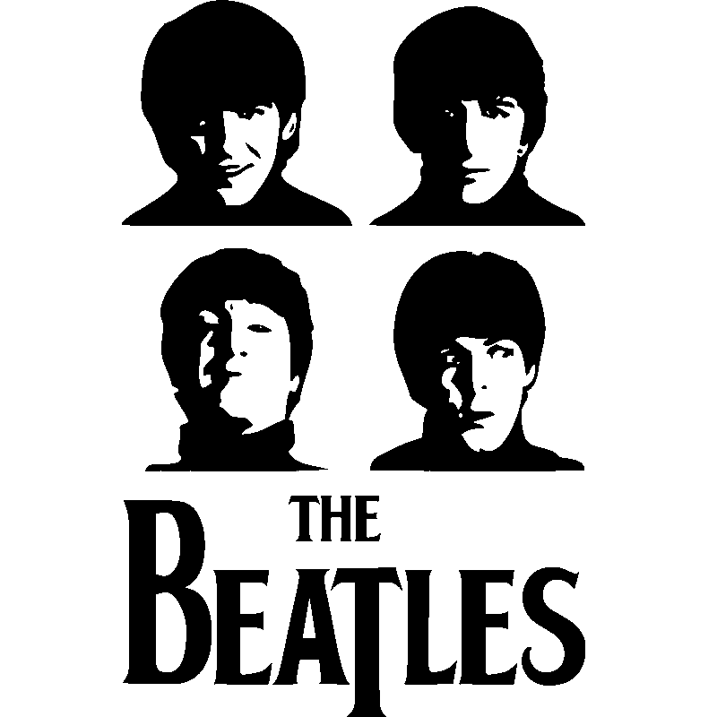

Boas-vindas a
 Quero conhecer!
Quem foram os Beatles?
The Beatles foi uma banda de rock britânica, formada na cidade de Liverpool em 1960. Com os integrantes John Lennon, Paul McCartney, George Harrison e Ringo Starr, o grupo tornou-se altamente reconhecido como o melhor e mais bem sucedido da era do rock.
Fotos Iconicas
A imagem de John Lennon, Paul McCartney, George Harrison e Ringo Starr atravessando a faixa de pedestres em frente ao Abbey Road Studios, em Londres, estampou a capa de Abbey Road, último álbum de estúdio dos Beatles. Símbolo do disco, cujo lançamento completa 50 anos nesta quinta-feira (26), a foto dos Fab Four é instantaneamente reconhecida e completou suas cinco décadas no dia 8 de agosto de 1969.
O fotógrafo inglês David Hurn, ícone do fotojornalismo, nome prestigiado da agência Magnum e autor da foto acima, prefere responder a essa pergunta da forma mais pessoal e efêmera possível: “Eu me lembro bem de jogar Monopoly (Banco Imobiliário) com eles”. David Hurn pegou o gosto pela fotografia durante seus anos no exército britânico, começando a fotografar profissionalmente movido por um espírito de curiosidade. Foi um golpe de sorte e bom timing que fizeram de Hurn correspondente fotográfico para grandes jornais durante a Revolução Húngara, em 1956. Desde então seu trabalho, tanto o profissional quanto o mais pessoal, mostrou sua predileção pelo humano, nu e cru.
Os Beatles antes de cruzar a Abbey Road, 1969 foto dos Beatles John Lennon, Paul Mccartney, George Harrison e Ringo Starr.
A rede de televisão americana NBC levará a história dos Beatles para a tela pequena em uma minissérie de oito capítulos. A série ainda está em seus estágios iniciais de desenvolvimento, mas já é conhecida por ser escrita pelo criador dos Tudors, Michael Hirst. Além disso, será produzido por Ben Silverman e Teri Weinberg, que já trabalharam com Hirst em outras ficções televisivas. A história do quarteto de Liverpool inspirou vários filmes, desde a recriação dos primeiros passos de John Lennon de Nowhere Boy (2009) até uma história sobre o empresário da banda, Brian Epstein, atualmente em produção.